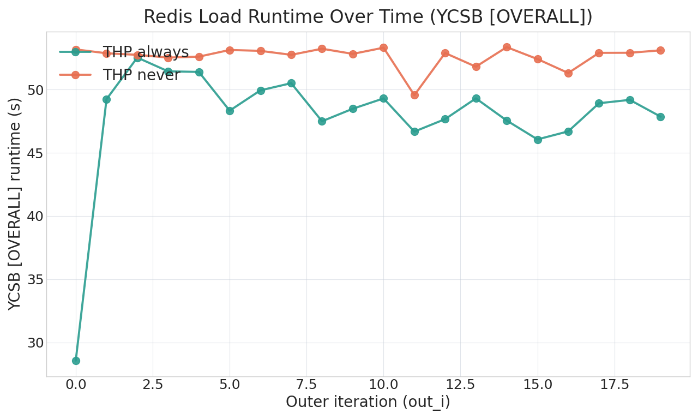
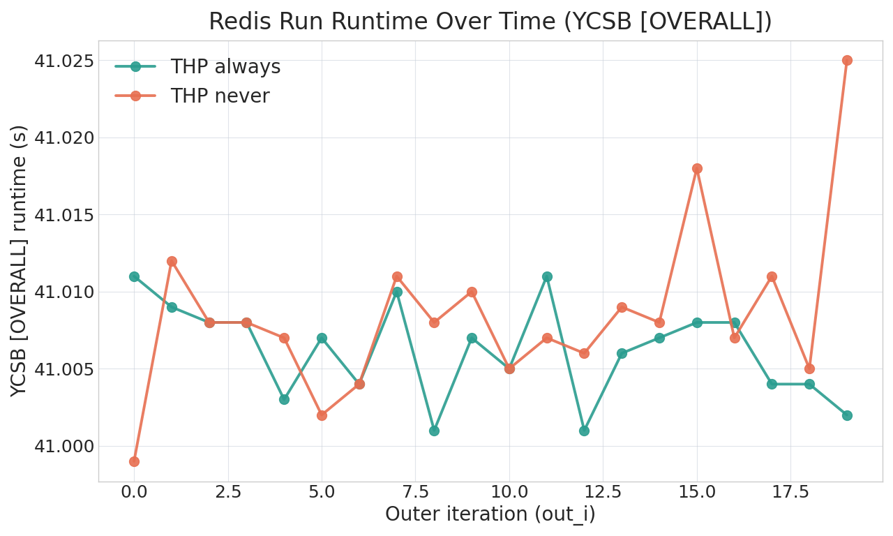
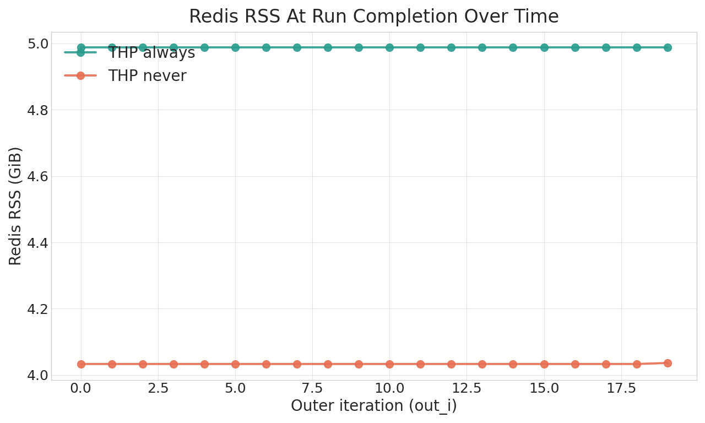

Redis always vs never RSS/runtime
This dashboard compares the two RSS-enabled collections captured on 20260413_delete20_zipfian.
The runtime graphs use raw YCSB [OVERALL], RunTime(ms) values by out_i. The RSS graph uses the latest reconstructed Redis RSS sample at or before each run-phase completion.
Always Collection
20260413T120742759288
/users/SahilSC/HugePageResearch/data/curated/redis/20260413T120742759288
Never Collection
20260413T112703058069
/users/SahilSC/HugePageResearch/data/curated/redis/20260413T112703058069
Always Stdout Log
tee output
temp_data_analysis/redis_always_delete20_zipfian_20260413_collect.stdout.log
Never Stdout Log
tee output
temp_data_analysis/redis_never_delete20_zipfian_20260413_collect.stdout.log
Load runtime by outer iteration
Same visual style as the prior always-vs-never YCSB runtime overlays, now regenerated from the new RSS-enabled collections.

Run runtime by outer iteration
Per-outer-iteration run-phase [OVERALL] runtime from redis_benchmark.log.

Redis RSS at run completion
Each point is the latest Redis RSS value rebuilt from mm_rss_stat at or before the matching run completion time.

Exact inputs used
/users/SahilSC/HugePageResearch/data/curated/redis/20260413T120742759288/redis_benchmark.log/users/SahilSC/HugePageResearch/data/curated/redis/20260413T120742759288/process_trace.*.parquet/users/SahilSC/HugePageResearch/data/curated/redis/20260413T120742759288/mm_rss_stat.*.parquet/users/SahilSC/HugePageResearch/data/curated/redis/20260413T112703058069/redis_benchmark.log/users/SahilSC/HugePageResearch/data/curated/redis/20260413T112703058069/process_trace.*.parquet/users/SahilSC/HugePageResearch/data/curated/redis/20260413T112703058069/mm_rss_stat.*.parquet
Parsed values
These are the exact outer-iteration values used to draw the PNG charts.
| out_i | Always load (s) | Always run (s) | Always RSS (GiB) | Never load (s) | Never run (s) | Never RSS (GiB) |
|---|---|---|---|---|---|---|
| 0 | 28.565 | 41.011 | 4.988 | 53.179 | 40.999 | 4.033 |
| 1 | 49.244 | 41.009 | 4.988 | 52.873 | 41.012 | 4.033 |
| 2 | 52.533 | 41.008 | 4.988 | 52.750 | 41.008 | 4.033 |
| 3 | 51.444 | 41.008 | 4.988 | 52.533 | 41.008 | 4.033 |
| 4 | 51.398 | 41.003 | 4.988 | 52.606 | 41.007 | 4.033 |
| 5 | 48.334 | 41.007 | 4.988 | 53.135 | 41.002 | 4.033 |
| 6 | 49.942 | 41.004 | 4.988 | 53.064 | 41.004 | 4.033 |
| 7 | 50.507 | 41.010 | 4.988 | 52.751 | 41.011 | 4.033 |
| 8 | 47.495 | 41.001 | 4.988 | 53.233 | 41.008 | 4.033 |
| 9 | 48.485 | 41.007 | 4.988 | 52.825 | 41.010 | 4.033 |
| 10 | 49.303 | 41.005 | 4.988 | 53.314 | 41.005 | 4.033 |
| 11 | 46.677 | 41.011 | 4.988 | 49.559 | 41.007 | 4.033 |
| 12 | 47.665 | 41.001 | 4.988 | 52.893 | 41.006 | 4.033 |
| 13 | 49.306 | 41.006 | 4.988 | 51.812 | 41.009 | 4.033 |
| 14 | 47.555 | 41.007 | 4.988 | 53.359 | 41.008 | 4.033 |
| 15 | 46.060 | 41.008 | 4.988 | 52.416 | 41.018 | 4.033 |
| 16 | 46.695 | 41.008 | 4.988 | 51.312 | 41.007 | 4.033 |
| 17 | 48.922 | 41.004 | 4.988 | 52.907 | 41.011 | 4.033 |
| 18 | 49.187 | 41.004 | 4.988 | 52.913 | 41.005 | 4.033 |
| 19 | 47.862 | 41.002 | 4.988 | 53.106 | 41.025 | 4.036 |